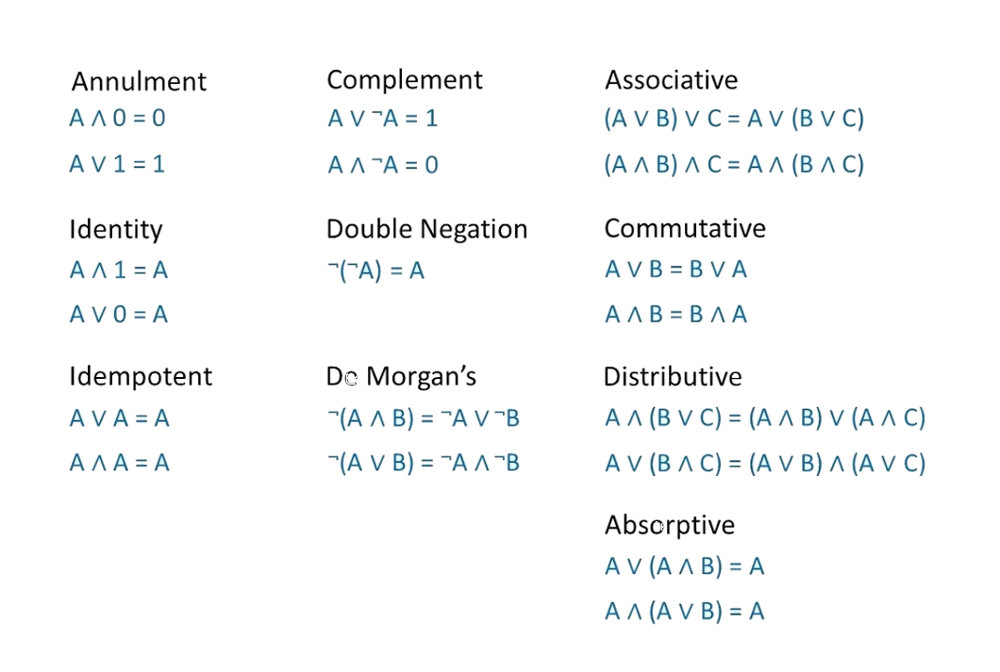

To understand the sets of numbers, we must begin with some basic set theory. A set is a group that contains elements, denoted by set braces and interior comma separated values (CSV) called elements; for example, {@@x, y, z@@} is a set containing elements @@x, y,@@ and @@z@@
Writing out an entire set each time we want to refer to it can be tedious, even more so when the set is large; so, it is standard to name sets as follows (using our example):
*Note we will use lots of Mathematical Notation (covered next section)
This way we can simply refer to the set by stating its name (@@S@@, rather than {@@x, y, z@@}) Doing so is especially useful when the "element of" operator is concerned
element of is denoted by "@@∈@@" and is an operator to express membership Considering our example: it is easy to see that @@x@@ is an element of the set, @@S@@; namely, @@x ∈ S@@
What about infinite sets? Luckily, there exist standard notations for such sets, but first we must define a few types of numbers:
In order to define the sets properly, we will introduce a simple notation called Set Builder Notation, defined as follows:
Set Builder Notation:
Now, for the sets:
*Note the + or - superscript may be applied to a set to imply the set of positives or the set of negatives. E.x., @@ℤ^+@@ is the set of all positive integers
Below is a venn diagram of the sets:

*Note @@ℂ@@ contains all the other sets because @@(a = 0) ⇒ bi ∈ 𝕀@@, and @@(b = 0) ⇒ a ∈ ℝ@@
Activity 1) Where do I belong?
1. What is the most specific set that @@16@@ belongs to?
2. Which number is a complex number?
3. What is the symbol for the set of rational numbers?
4. {@@x ∈ ℝ\:|\:x ≤ 6@@} is the set of all real numbers less than or equal to 6
5. @@\frac{ln(π) + \sqrt2}{e^{cos(28)}} ∈ ℝ@@
| Your answer | Correct answer | ||
|---|---|---|---|
| 1. | @@ℕ@@ | ||
| 2. | All of the above | ||
| 3. | @@ℚ@@ | ||
| 4. | True | ||
| 5. | True |
Math has symbols... lots of them. But they are nothing to be scared of! Rather, they are just a shorthand mathematicians use to simplify the way things are denoted. As shown in the previous lesson regarding sets, stating something in English takes much more space than stating the same thing using Mathematical Notation
*Note in this lesson we will explore the most commonly used symbols on this website
Logic:
@@X ⇒ Y@@ means @@X@@ implies @@Y@@ (if @@X@@, then @@Y@@)
@@X ⇔ Y@@ means @@X@@ and @@Y@@ are equivalent (@@X@@ if and only if @@Y@@)
let @@X@@ = true, such that @@¬X@@ means not @@X@@ = false
@@∀ X,\:|X| > 0@@ means for all values of @@X@@, the absolute value of @@X@@ is greater than @@0@@
@@∃ X@@ such that @@X > 0@@ means there exists some value of @@X@@, such that it is greater than @@0@@
Activity 1) Logical?
1. @@∃ X@@ such that @@X ∈ ℝ@@
2. @@X ∈ ℝ ⇒ X ∈ ℤ@@
| Your answer | Correct answer | ||
|---|---|---|---|
| 1. | True | ||
| 2. | False |
Operators and Comparison:
@@2 ≠ 3@@ (2 does not equal 3)
@@4 ≡ 1\: (mod\: 3)@@ (4 is congruent to 1 when divided by 3; namely, the remainder is 1)
@@3 ∣ 6@@ (3 divides 6)
@@3 ∤ 7@@ (3 does not divide 7)
@@3 ≥ 2@@ (3 is greater than or equal to 2)
@@2 ≤ 3@@ (2 is less than or equal to 3)
@@1.1 ≈ 1.11@@ (1.1 is approximately equal to 1.11)
There are many more symbols and notations that will be used in this website, but they will be introduced with their respective (later) topics as to avoid confusion! The introduction of how to denote divisibility and congruence leads us to our next few lessons (1.3 - 1.7)
What is division? Division is an algorithm that is defined by the operations multiplication and addition. Well, you might be thinking, "I was taught that division was an operation!" Yes, that is what we were all taught growing up; but first, let's take a look at subtraction. Really, subtraction is just adding two numbers with a catch: the second one was multiplied by @@-1@@; namely @@a - b = a + b(-1)@@... But why do we care? Well, for subtraction we don't get anything really cool from this definition, but with division we are given two really important quantities: the quotient and the remainder
The dividend, divisor, quotient, and remainder are the same as they always were:
When we think of division in the same way that we thought of subtraction above, we are given the following theorem (Euclid):
Let a and b be integers with @@b > 0@@
Then there exist unique integers @@q@@ and @@r@@ such that @@a = bq + r@@, where @@0 ≤ r < b@@
This theorem greatly simplifies the jarring English used above, defining division in terms of multiplication and addition. From this, we get the following: @@r = bq - a@@, which is obvious, but what really does it mean? We have defined the remainder as the difference of the (product of the divisor and the quotient) and the dividend, as we said above!
So what do we do with this seemingly overcomplicated definition of division? Well... we divide stuff. Let's take a look at how to do it:
Example 1: @@55@@ divided by @@3@@
By the Division Algorithm, we see that:
With that, our next step is to find @@q@@ by answering the question, "How many times does @@3@@ go into @@55@@?"
*Note @@a > 0@@
We can do so by using the brute force method of letting @@q = 1@@ and iterating up to a value of @@q@@ such that @@3q > 55@@, in which case the previous value of @@q@@ is the quotient
*Note a smarter approach would be to pick a larger number and guess and check down to the first product less than 55
With that, by the Division Algorithm, we obtain the following:
Now, all that is left to do is find the remainder by rearranging the algebraic expression:
Finally, we obtain the following equality by the Division Algorithm:
Thus, when @@55@@ is divided by @@3@@, a quotient of @@18@@ and a remainder of @@1@@ are given
Example 2: @@-22@@ divided by @@7@@
By the Division Algorithm, we see that:
With that, our next step is to find @@q@@ by answering the question, "How many times does @@7@@ go into @@-22@@?"
*Note @@a < 0@@
We can do so by using the brute force method of letting @@q = -1@@ and iterating down to a value of @@q@@ such that @@7q < -22@@, in which case the that value of @@q@@ is the quotient
With that, by the Division Algorithm, we obtain the following:
Now, all that is left to do is find the remainder by rearranging the algebraic expression:
Finally, we obtain the following equality by the Division Algorithm:
Thus, when @@-22@@ is divided by @@7@@, a quotient of @@-4@@ and a remainder of @@6@@ are given
Generalizing the steps:
Activity 1) What's leftover?
1. @@224@@ divided by @@9@@
2. @@-312@@ divided by @@5@@
| Your answer | Correct answer | ||
|---|---|---|---|
| 1a. | @@24@@ | ||
| 1b. | @@8@@ | ||
| 2a. | @@-63@@ | ||
| 2b. | @@3@@ |
Since we discussed how division is defined and works, the topic of divisibility is now of interest. One definition of Divisibility via the Division Algorithm is as follows:
Let @@a@@ and @@b@@ be integers where @@a@@ is to be divided by @@b@@
It is said that b divides @@a@@, denoted by @@b ∣ a@@, if and only if the remainder is @@0@@
Namely, by the Divison Algorithm, @@b ∣ a ⇔ a = bq + 0@@
If the remainder is not @@0@@, then it is said that @@b@@ does not divide @@a@@, denoted by @@b∤@@ @@a@@
Another definition of Divisibility:
Let @@a@@, @@b@@, and @@k@@ be integers where @@a@@ is to be divided by @@b@@, and @@k@@ is some integer
It is said that @@b@@ divides @@a@@, denoted by @@b@@ @@∣@@ @@a@@, if and only if @@a@@ is a multiple of @@b@@; namely, a = kb
If @@a ≠ kb@@, then it is said that @@b@@ does not divide @@a@@, denoted by @@b@@ @@∤@@ @@a@@
Example 1: @@19 ∣ 1482@@?
We begin by checking if @@1482@@ is a multiple of @@19@@, if @@19@@ divides @@1482@@ then @@1482 = 19k@@ for some integer @@k@@:
Since @@1482@@ is a multiple of @@19@@, @@19 ∣ 1482@@
Example 2: @@3 ∣ 1343@@?
We begin by checking if @@1343@@ is a multiple of @@3@@:
Since @@1343@@ is not a multiple of @@3@@, @@3 ∤ 1343@@
Example 3: @@7 ∣ -28@@?
We begin by checking if @@-28@@ is a multiple of @@7@@:
Since @@-28@@ is a multiple of @@7@@, @@7@@ ∣ @@-28@@
Example 4: @@16 ∣ -1528?@@
We begin by checking if @@-1582@@ is a multiple of @@16@@:
Since @@-1528@@ is not a multiple of @@16@@, @@16 ∤ -1528@@
Example 5: @@3 ∣ (18x + 63x^2 - 123x^6)@@?
What? Notice that the coefficient of each term is a factor of 3:
Since @@(18x + 63x^2 - 123x^6)@@ is a multiple of @@3, 3 ∣ (18x + 63x^2 - 123x^6)@@
Generalizing the steps:
Activity 1) Divisible?
1. @@2 ∣ 121512553331@@
2. @@2 ∣ 121512553330@@
3. @@13 ∣ 169e^x@@
4. @@7 ∣ (35x + 21)^2@@
| Your answer | Correct answer | ||
|---|---|---|---|
| 1. | False | ||
| 2. | True | ||
| 3. | True | ||
| 4. | True |
Our next topic is the Greatest Common Divisor (GCD). This is another familiar topic, defined by its name... literally The GCD of two (or more) integers is the largest number that divides all of them
Let @@a, b,@@ and @@d@@ be integers, where @@d@@ is a divisor of both @@a@@ and @@b@@
Then there does not exist an integer, @@c@@, such that @@c@@ is a divisor of both @@a@@ and @@b@@, where @@c > d@@
It is then said that @@d@@ is the greatest common divisor of @@a@@ and @@b@@; namely, @@GCD(a, b) = d@@
In the past, we might have calculated the GCD by guessing and checking, but there is actually a nice algorithm, the Euclidean Algorithm, which is used to compute the GCD of two integers. The Euclidean Algorithm is essentially a recursive version of the Division Algorithm, defined as follows:
Consider we want to compute the GCD of two integers @@a@@ and @@b@@, where @@a > b@@
Let @@q@@ and @@r@@ be integers given by the Division Algorithm, @@a = bq + r@@, and let @@a@@ and @@b@@ be the integers from above
We then complete the Division Algorithm a first time by finding the values of @@q@@ and @@r@@ that satisfy the equality
After doing so, we then set up another equality with the values of @@b@@ and @@r@@ as follows:
@@b = rx + y@@, to which we then find the values of @@x@@ (quotient) and @@y@@ (remainder) as usual
We then keep doing this process until the remainder is @@0@@, in which case the remainder from the previous iteration is the GCD of @@a@@ and @@b@@
*Note when dealing with negative values of @@a@@ and @@b@@ we can take the absolute value and proceed as usual (Proof)
In theory this may be confusing, so let's look at an example before generalizing:
*Note we will use subscripts starting from @@1@@ to denote the iterations
Example: find @@GCD(687, 24)@@
A bonus of the Euclidean Algorithm is that we can find integer values, @@m@@ and @@n@@, to the linear combination @@am + bn = GCD(a, b)@@ by applying what is called the Extended Euclidean Algorithm, which is essentially working down to the calculation of the GCD by substitution
*Note this is particular useful for solving Linear Diophantine Equations
Generalizing the steps to the Euclidean Algorithm for GCD:
Generalizing the steps to the Extended Euclidean Algorithm for Linear Combinations:
A nice property of the GCD is that we can calculate the GCD of multiple integers via a recursive process. For example:
GCD(a, b, c, d):
A bonus concept is the Least Common Multiple (LCM) which is given
(Proof) by the following famous relation:
@@LCM[a, b] = \frac{|a*b|}{GCD(a,b)}@@
Similar to the GCD, the LCM of multiple integers can be calculated via a recursive process. For example:
@@LCM[a, b, c, d]@@:
Activity 1) GCD this, GCD that
1. What is the Greatest Common Divisor of @@1024, 2056,@@ and @@4096@@?
2. Find integers @@m@@ and @@n@@ such that @@GCD(341, 22) = 341m + 22n@@
3. Find the Least Common Multiple of @@1024, 2056,@@ and @@4096@@
| Your answer | Correct answer | ||
|---|---|---|---|
| 1. | @@8@@ | ||
| 2a. | @@1@@ | ||
| 2b. | @@-15@@ | ||
| 3. | @@1052672@@ |
An extension of division is the concept of Modular Arithmetic; arithmetic in the set @@ℤ_n@@
@@ℤ_n@@ is the set of integers from @@0@@ to @@n - 1@@; namely, @@ℤ_n = @@ {@@0, 1, 2,..., n - 1@@}, where @@n ∈ ℤ@@
So what is the significance of this? When an integer is divided by @@n@@, it has @@n@@ possible unique remainders, from @@0@@ to @@n - 1@@; it is from this property that the set @@ℤ_n@@ is defined
Every element of @@ℤ_n@@ is unique and its own distinct Congruence ClassThe Congruence Classes of @@ℤ_n@@ are @@[0], [1], [2],..., [n - 1]@@
Example: @@ℤ_5 = @@ {@@0, 1, 2, 3, 4@@}
Definition: Given @@a, b ∈ ℤ, a@@ is congruent to @@ℤ_n@@ iff. @@a@@ and @@b@@ are in the same Congruence Class; namely,
@@a ≡ b\:(mod\: n)@@
Theorem: @@a ≡ b\:(mod\: n)@@ iff. @@n ∣ a - b@@
So how do we find the value of b, provided we have a and n? The Division Algorithm, set up as follows:
We then proceed as usual, here's an example:
Example: Verify the congruence @@28 ≡ 3\: (mod\: 5)@@
Thus, the congruence is true, @@28 = [3]@@ in @@ℤ_5@@
However, the main question to answer when dealing with congruences usually looks something like this:
\(mx\equiv b\:(mod\:p)\), where @@m, b,@@ and @@n@@ are given and we must solve for @@x@@
Before we continue to solve this Linear Congruence, we must first understand what a Multiplicative Inverse is:
Definition: given an element @@x@@, then its multiplicative inverse, @@x^{-1}@@ is an element such that @@x * x^{-1} = 1@@
Example: the multiplicative inverse of @@4@@ in @@ℝ@@ is @@\frac{1}{4}@@ since @@4*\frac{1}{4} = 1@@
However, we are interested in multiplicative inverses in @@ℤ_n@@ not @@ℝ@@
It's the same idea, however we are restricted to the elements of @@ℤ_n@@, to go about finding the inverse we must check the product of each element and the given integer until it is congruent to @@1\: (mod\: n)@@. Let's look at an example:
Example: Find @@3^{-1}@@ in @@ℤ_7@@
So @@3^{-1}=5@@ in @@ℤ_7@@, since @@3 * 5 ≡ 1\: (mod\: 7)@@
But sometimes there won't be a multiplicative inverse in @@ℤ_n@@, in which case the approach is to convert to a Linear Diophantine Equation and solve for the unknown. However, we will only consider the group @@ℤ_p^*@@
Given @@p@@ is prime, @@ℤ_p^* = @@ {@@1, 2,..., p - 1@@}, where every element has a multiplicative inverse
Example: Solve @@7x ≡ 192\: (mod\: 11)@@
First, let's find @@7^{-1}@@ in @@ℤ_{11}^*@@
So @@7^{-1}=8@@ in @@ℤ_{11}^*@@, since @@7 * 8 ≡ 1\: (mod\: 11)@@
Next we have to multiply both sides of the congruence by @@7^{-1}@@ and reduce @@(mod\: 11)@@
Thus, @@x=7@@ We can check this by substituting and reducing @@(mod\: 11)@@
Generalizing the steps to solving \(mx\equiv b\:(mod\:p)\):
We are going to introduce a way to solve a system of linear congruences by using the Chinese Remainder Theorem:
Consider the system of simultaneous congruences:
Where \(n_1,n_2,...,n_k\) are pairwise coprime integers, then
The system has a solution, which is unique modulo \(N=n_1n_2...n_k\)
Given by \(\sum_{i=1}^k a_ib_ic_i\), Where \(b_i\) = \(\frac{N}{n_i}\) and \(c_i\) = \(b_ix\equiv a_i\:(mod\:n_i)\)
*Note don't worry about the definition of coprime, it will be covered in the next section and all examples in this section will satisfy the criterion
Example: Solve the following system:
The first step is to find the values of @@N@@ and @@b_1,b_2,b_3@@
Next we need to find the values of @@c_1,c_2,c_3@@
The last step is to find the solution, @@x@@
So the solution to the system is @@x=157\equiv 52\:(mod\:105)@@
Activity 1) Linear Congruences
1. Solve @@19x \equiv 4\:(mod\:17)@@
2. Solve the system
| Your answer | Correct answer | ||
|---|---|---|---|
| 1. | @@2@@ | ||
| 2a. | @@2145@@ | ||
| 2b. | @@74@@ |
Primes are one of, if not the most important type of number. They give us the beautiful property in the group @@ℤ_p^*@@ that every element has an inverse, can be used for encryption, have many pleasing geometric and arithmetic properties, there are infinitely many of them (Euclid), and they have endless applications
Fundamental Theorem of Arithmetic: Every integer can be uniquely represented as a product of primes (Euclid)
*Note said product is called the prime factorization of the integer
Prime Definition: An integer, @@p@@ is Prime iff. @@\pm 1@@ and @@\pm p@@ are its only divisors; namely, its prime factorization is @@1*p@@
Composite Definition: An integer, @@c@@ is Composite if there exists at least one other divisor, @@d@@, in addition to the divisors @@\pm 1@@ and @@\pm c@@; namely, its prime factorization consists of a product of smaller integers
Coprime Definition: Two integers, @@a@@ and @@b@@ are said to be Relatively Prime (coprime) if @@GCD(a,b) = 1@@
Let's look at some examples considering the above statements:
Example 1: The prime factorization of @@52 = 1*2^2*13@@ (composite)
Example 2: The prime factorization of @@623 = 1*7*89@@ (composite)
Example 3: The prime factorization of @@1188 = 1*2^2*3^3*11@@ (composite)
Example 4: The prime factorization of @@593 = 1*593@@ (prime)
Example 5: Are @@21@@ and @@8@@ relatively prime? @@GCD(21,8)=1\Rightarrow 21@@ and @@8@@ are relatively prime

A Prime Phyllotaxis Spiral (source)
Resources (Regarding the development in primes): Current Largest Prime, List of Primes
Activity 1) Properties
1. Is @@1213@@ prime?
2. Write the prime factorization of @@516@@
3. Are @@1234567890@@ and @@62@@ coprime?
| Your answer | Correct answer | ||
|---|---|---|---|
| 1. | Yes | ||
| 2. | @@2^2*3*43@@ | ||
| 3. | No |
We can represent numbers in many ways, but typically we use the decimal system, consisting of digits 0 - 9. Maybe the reason that we commonly use the decimal system is it makes counting easier; we have 10 fingers, and the decimal system has 10 digits (fingers are also called digits coincidentally)
Some common number systems
Binary: System with 2 digits (base 2) {@@0, 1@@}
Decimal: System with 10 digits (base 10) {@@0, 1, 2, 3, 4, 5, 6, 7, 8, 9@@}
Hexadecimal: System with 16 digits (base 16) {@@0, 1, 2, 3, 4, 5, 6, 7, 8, 9, A, B, C, D, E, F@@}
Convert from decimal to binary:
Convert from binary to decimal:
Convert from decimal to hexadecimal:
Convert from hexadecimal to decimal:
Convert from decimal to base k, where k is some integer:
Convert from base k to decimal, where k is some integer:
Below is a chart with the 16 standard conversions between binary, decimal, and hexadecimal:
Notation:
Example 1: Convert @@1001101_2@@ to decimal
Thus, @@1001101_2 \Leftrightarrow 77_{10}@@
Example 2: Convert @@5742_{10}@@ to hexadecimal
Thus, @@5742_{10}\Leftrightarrow @@ 0X166E
Activity 1) Converter
1. What is @@11110_2@@ in base 10?
2. What is @@922_{10}@@ in hexadecimal?
3. What is @@922_{10}@@ in binary?
4. What is @@77216_8@@ in decimal?
| Your answer | Correct answer | ||
|---|---|---|---|
| 1. | @@30_{10}@@ | ||
| 2. | 0X39A | ||
| 3. | @@1110011010_2@@ | ||
| 4. | @@32398_{10}@@ |
Proposition: A Proposition is statement that is either true or false
Truth Value: A value that indicates whether a proposition is @@T@@ (true) or @@F@@ (false)
Compound Proposition: A Compound Proposition is statement that is composed of multiple propositions, let them be @@p@@ and @@q@@
Conjunction: A logic operator to connect propositions, denoted by @@\land@@ where @@p\land q\equiv T@@ only when both @@p@@ and @@q@@ are true (logical and)
Disjunction: A logic operator to connect propositions, denoted by @@\lor@@ where @@p\lor q\equiv T@@ when either @@p@@ or @@q@@ is true, or if both are true (logical or)
Exclusive Or: A logic operator to connect propositions, denoted by @@\oplus@@ where @@p\oplus q\equiv T@@ only when exactly either @@p@@ is true or @@q@@ is true (logical xor)
Negation: A logic operator to negate propositions, denoted by @@\neg@@ where @@\neg T\equiv F@@ (logical not)
Conditional: Operation @@p\rightarrow q@@ means "if @@p@@, then @@q@@" (@@p@@ implies @@q@@) when @@p@@ is the hypothesis and @@q@@ is the conclusion, @@p\rightarrow q\equiv F@@ when the hypothesis is false and the conclusion is true, and @@p\rightarrow q\equiv T@@ otherwise
Biconditional: Operation @@p\leftrightarrow q@@ means "@@p@@ if and only if @@q@@" (@@p@@ implies @@q@@ and @@q@@ implies @@p@@) when @@p@@ is the hypothesis and @@q@@ is the conclusion, @@p\rightarrow q\equiv T@@ when the hypothesis and the conclusion are the same, and @@p\leftrightarrow q\equiv F@@ when they are different
Relation: If @@p@@ is the hypothesis and @@q@@ is the conclusion
Tautology: When the proposition is always true, regardless of the truth values of the individual propositions
Contradiction: When the proposition is always false, regardless of the truth values of the individual propositions
Logical Equivalence: Propositions are said to be logically equivalent if they both have to the same truth value when evaluated. Laws of logic can be applied to help simplify a proposition
DeMorgan's Law: DeMorgan's Law is particularly useful for simplifying propositions. Essentially, it is the distribution of a negation about a statement (there are two versions)
Laws of Propositional Logic: Standard Laws that can be used to reduce any applicable proposition
Predicate: A proposition involving variables such that, depending on the input values, the proposition is true or false. Can be expressed as a function @@P(x,y,...,n)@@
Quantifiers: Operators that may quantify a statement, there are two main quantifiers (Universal and Existential)
DeMorgan's Law for Quantified Statements: Like before, this is essentially the distribution of a negation, this time about a quantified statement (there are two versions)
Nested Quantifiers: When a statement has more than one quantifier, evaluated by applying the quantifier to its respective variable
DeMorgan's Law for Nested Quantified Statements: Like before, this is essentially the distribution of a negation, this time about a nested quantified statement (there are four versions)
Convert English to Logic: Look for key implications and translate them to their respective logical operators
Example: Considering @@P(x)@@: "person @@x@@ watches One Piece" and @@Q(x):@@ "person @@x@@ likes One Piece" we will translate the following statements to logical expressions:
Activity 1) Logical 2
1. Is "LearnMade contains thousands of lines of code" a proposition?
2. Given @@P(x): ln(x+1)\in \mathbb{R}@@, what is the truth value of @@P(-1)@@?
3. Is @@\exists x: Q(x) \land \neg P(x)@@ the correct logic translation of "There is a person that is in class and did not take notes" given @@P(x)@@: "@@x@@ took notes" and @@Q(x)@@: "@@x@@ is in class"?
4. Using the laws of propositional logic, are @@(\neg p\land s)\lor \neg (p\lor s)@@ and @@\neg p@@ logically equivalent?
5. Which law of propositional logic was applied to the statement @@(\neg p \land \neg q)\lor (\neg p \land q)@@ to get @@\neg p \land (\neg q \lor q)@@?
6. Which term best defines the expression @@p\leftrightarrow \neg p@@?
7. Consider @@\neg p\rightarrow q@@, which term best defines the expression @@q\rightarrow \neg p@@?
8. What is the truth value of the proposition statement @@(\neg \neg \neg F \land (T \lor \neg \neg F)) \oplus T@@
| Your answer | Correct answer | ||
|---|---|---|---|
| 1. | Yes | ||
| 2. | @@F@@ | ||
| 3. | Yes | ||
| 4. | Yes | ||
| 5. | Distributive | ||
| 6. | Contradiction | ||
| 7. | Converse | ||
| 8. | @@F@@ |
Boolean Algebra is like Formal Logic, but instead of @@T@@'s and @@F@@'s there are @@1@@'s and @@0@@'s, which behave the same, respectively
There are a couple important conventions to discuss when it comes to Boolean Algebra: one of them is how the @@+@@, @@*@@, and @@'@@ operators are defined
@@+@@ (behaves like or)
@@*@@ (behaves like and)
@@'@@ (behaves like not)
*Note we are looking at Boolean addition not Integer addition, so @@1+1=1@@ reads like @@T \lor T \equiv T@@
It is also important to mention that the @@'@@ operator is called the complement. Next we will look at Logic Gates
Logic Gates: Operators (used in circuits) that output a certain boolean value depending on the inputs
Just like Formal Logic, Boolean Algebra uses expressions. A Boolean expression consists of several components that have individual truth values which can be evaluated by a compound expression. Below are some standard laws which can be applied in a similar fashion to the Laws of Propositional Logic to reduce an expression:
Minterm: The Sum of Products (SoP) where the output value is 1
Maxterm: The Product of Sums (PoS) where the output value is 0
Activity 1) Table Terms
Consider the truth table
@@\small\begin{matrix} A & B & C & D & | & Output \\ 1 & 1 & 1 & 1 & | & 1 \\ 1 & 1 & 1 & 0 & | & 1 \\ 1 & 1 & 0 & 1 & | & 0 \\ 1 & 1 & 0 & 0 & | & 0 \\ 1 & 0 & 1 & 1 & | & 0 \\ 1 & 0 & 1 & 0 & | & 1 \\ 1 & 0 & 0 & 1 & | & 0 \\ 1 & 0 & 0 & 0 & | & 1 \\ 0 & 1 & 1 & 1 & | & 1 \\ 0 & 1 & 1 & 0 & | & 1 \\ 0 & 1 & 0 & 1 & | & 1 \\ 0 & 1 & 0 & 0 & | & 0 \\ 0 & 0 & 1 & 1 & | & 1 \\ 0 & 0 & 1 & 0 & | & 0 \\ 0 & 0 & 0 & 1 & | & 0 \\ 0 & 0 & 0 & 0 & | & 1 \end{matrix}\small@@
1. What is the minterm?
2. What is the maxterm?
| Your answer | Correct answer | ||
|---|---|---|---|
| 1. | ABCD + ABCD' + AB'CD' + AB'C'D' + A'BCD + A'BCD' + A'BC'D + A'B'CD + A'B'C'D' | ||
| 2. | (A+B+C'+D)(A+B+C'+D')(A+B'+C+D)(A+B'+C'+D)(A'+B+C'+D')(A'+B'+C+D')(A'+B'+C'+D) |
Cartesian: @@(x,y)@@ "rectangular system"
Polar: @@(r,\theta )@@ "circular system"
Convert from Cartesian to Polar:
Jacobian: @@r@@
Cartesian: @@(x,y,z)@@ "cubic system"
Cylindrical: @@(r,\theta , z)@@ "A cylindrical system"
Convert from Cartesian to Cylindrical:
Jacobian: @@r@@
Spherical: @@(\rho,\theta , \phi)@@ "spherical system"
Convert from Cartesian to Spherical:
Jacobian: @@\rho ^2sin\phi@@
Activity 1) Translation
1. Convert @@\small\begin{bmatrix} 5x+y^3-1 \\ \sqrt{2}+16(x^2+y^2) \end{bmatrix}\small@@ to Polar
2. Convert @@\small\begin{bmatrix} 27x^3+z^7 \\ y+xln(z) \\ z\sqrt{x^2+y^2} \end{bmatrix}\small@@ to Cylindrical
3. Convert @@\small\begin{bmatrix} 27x^3+z^7 \\ y+xln(z) \\ z\sqrt{x^2+y^2+z^2} \end{bmatrix}\small@@ to Spherical
| Your answer | Correct answer | ||
|---|---|---|---|
| 1. | @@\small\begin{bmatrix} 5rcos\theta+r^3sin^3\theta-1 \\ \sqrt{2}+16r^2 \end{bmatrix}\small@@ | ||
| 2. | @@\small\begin{bmatrix} 27r^3cos^3\theta+z^7 \\ rsin\theta+rcos\theta*ln(z) \\ rz \end{bmatrix}\small@@ | ||
| 3. | @@\small\begin{bmatrix} 27\rho^3sin^3\phi cos^3\theta+\rho^7cos^7\phi \\ \rho sin\phi sin\theta+\rho sin\phi cos\theta*ln(\rho cos\theta) \\ \rho^3cos\phi \end{bmatrix}\small@@ |
To begin covering vectors, we must first discuss what a Tuple is. A tuple behaves like coordinates in the sense that it is a collection of ordered elements. However, it can have an arbitrary number of elements, unlike how the coordinates of our specific systems are limited to 2 or 3 entries based on the dimension
Tuple: An ordered collection of @@n@@ elements, looks like @@(x_1, x_2,...,x_n)@@ and is said to be a @@n@@-tuple where @@n \in \mathbb{Z}@@
*Note we can think of these @@n@@-tuples as "something living in @@n@@-dimensional space," which is better phrased as "a @@n@@-dimensional vector"
Vector: An ordered collection (tuple) of @@n@@ elements, denoted @@\vec{x}=\small\begin{bmatrix} x_1 \\ x_2 \\ \vdots \\ x_n \end{bmatrix}\small@@ and is said to be a @@n@@-dimensional vector where @@n \in \mathbb{Z}@@
*Note any general vector can be denoted by an overhead arrow as shown above
Zero Vector: A vector in which every component is @@0@@, denoted by @@\vec{0}@@
*Note the entries/elements of a vector are called its components
A popular place to use vectors is the @@n@@-dimensional Euclidean Vector Space, @@\mathbb{R}^n@@, where @@n \in \mathbb{Z}@@ and the space is defined by @@\mathbb{R}^n=\small\begin{bmatrix} x_1 \\ x_2 \\ \vdots \\ x_n \end{bmatrix}\small@@ where @@x_1,x_2,...,x_n \in \mathbb{R}@@
A Euclidean Vector Space has several powerful properties. Given @@\vec{u},\vec{v},\vec{w} \in \mathbb{R}^n@@ and @@a,b\in \mathbb{R}@@
*Note For an operation to be closed, its output must also be a member of the set its inputs are. We will cover the other operations in the next section
Standard Basis Vectors: The unit vectors @@\hat{i},\hat{j},\hat{k}@@ are the standard basis vectors in @@\mathbb{R}^3@@ and defined by @@\hat{i}=\small\begin{bmatrix} 1 \\ 0 \\ 0 \end{bmatrix}\small ,\:\hat{j}=\small\begin{bmatrix} 0 \\ 1 \\ 0 \end{bmatrix}\small ,\:\hat{k}=\small\begin{bmatrix} 0 \\ 0 \\ 1 \end{bmatrix}\small @@
*Note these vectors are essential for taking the cross product of two vectors in @@\mathbb{R}^3@@
Vector Addition: Defined component-wise for vectors of the same dimension; the sum of corresponding entries
Vector Subtraction: Defined component-wise for vectors of the same dimension; the sum of corresponding entries (can be expressed as @@\vec{u}+(-\vec{v}))@@
Scalar Multiplication: Defined by "scaling" every component of the vector by the scalar
Dot Product: Given @@\vec{u},\vec{v}\in \mathbb{R}^n@@ then @@\vec{u}\cdot \vec{v}=\sum_{i=1}^n a_ib_i@@ "The sum of the products of the corresponding components of two vectors of the same dimension" (the result is a scalar value, not a vector)
Cross Product: Given @@\vec{u},\vec{v}\in \mathbb{R}^3@@ then @@\vec{u}\times \vec{v}=\small\begin{vmatrix} \hat{i} & \hat{j} & \hat{k} \\ x_1 & x_2 & x_3 \\ y_1 & y_2 & y_3 \end{vmatrix}\small= \small\begin{vmatrix} x_2 & x_3 \\ y_2 & y_3 \end{vmatrix}\small\hat{i}-\small\begin{vmatrix} x_1 & x_3 \\ y_1 & y_3 \end{vmatrix}\small\hat{j}+\small\begin{vmatrix} x_1 & x_2 \\ y_1 & y_2 \end{vmatrix}\small\hat{k}= \small\begin{bmatrix} x_2y_3-x_3y_2 \\ -(x_1y_3-x_3y_1) \\ x_1y_2-x_2y_1 \end{bmatrix}\small@@
*Note the cross product is computed by applying Cofactor Expansion along the first row (Determinants)
Activity 1) Operation
Let @@\vec{a}=\small\begin{bmatrix} 1 \\ 3 \\ 5 \end{bmatrix}\small@@ and @@\vec{b}=\small\begin{bmatrix} 2 \\ 4 \\ 6 \end{bmatrix}\small@@
1. Compute @@14\vec{a}+\vec{b}@@
2. Compute @@\vec{b}-2\vec{a}@@
3. Compute @@19(\vec{a}\cdot\vec{b})@@
4. Compute @@\vec{a}\times\vec{b}@@
5. Compute @@\vec{b}\times\vec{a}@@
| Your answer | Correct answer | ||
|---|---|---|---|
| 1. | @@\small\begin{bmatrix} 16 \\ 46 \\ 76 \end{bmatrix}\small@@ | ||
| 2. | @@\small\begin{bmatrix} 0 \\ -2 \\ -4 \end{bmatrix}\small@@ | ||
| 3. | @@836@@ | ||
| 4. | @@\small\begin{bmatrix} -2 \\ 4 \\ -2 \end{bmatrix}\small@@ | ||
| 5. | @@\small\begin{bmatrix} 2 \\ -4 \\ 2 \end{bmatrix}\small@@ |
Before we discuss anything much about matrices, let's consider vectors for a moment. A @@n@@-dimensional vector can be thought of as a @@n\times 1@@ Matrix. Essentially, what this means is that a vector has @@n@@ rows and @@1@@ column. Now, what if we put two @@n@@-dimensional vectors together? We now have a collection of two vectors; namely, a matrix with @@n@@ rows and @@2@@ columns.
What if we do this procedure @@n@@ times? Well, then we have a a collection of @@n@@ vectors; namely, a matrix with @@n@@ rows and @@n@@ columns. For the sake of notation, let us denote the number of rows by @@m@@, and the number of columns by @@n@@
Collection of Vectors: Interpretation of a matrix where the number of rows is how many dimensions the vectors are (think @@\mathbb{R}^n@@) and the number of columns is the number of vectors in the collection
Example: Consider three vectors @@\small\begin{bmatrix} a_1 \\ a_2 \\ \vdots \\ a_n \end{bmatrix}\small ,\small\begin{bmatrix} b_1 \\ b_2 \\ \vdots \\ b_n \end{bmatrix}\small ,\small\begin{bmatrix} c_1 \\ c_2 \\ \vdots \\ c_n \end{bmatrix}\small ,@@ where @@a_1,...,a_n;\: b_1,...,b_n;\: c_1,...,c_n@@ are scalar values. Then the equivalent collection of vectors (coefficient matrix) is given by @@\small\begin{bmatrix} a_1 & b_1 & c_1 \\ a_2 & b_2 & c_2 \\ \vdots & \vdots & \vdots \\ a_m & b_m & c_m \end{bmatrix}\small@@ (@@m\times 3@@ matrix)
Finding an Element of a Matrix: Given a matrix, @@A@@ then an entry in @@A@@, @@a_{ij}@@ is the element at the @@i@@th row and the @@j@@th column @@A=\small\begin{bmatrix} a_{11} & a_{12} & \cdots & a_{1j} \\ a_{21} & a_{22} & \cdots & a_{2j} \\ \vdots & \vdots & \ddots & \vdots \\ a_{i1} & a_{i2} & \cdots & a_{ij} \end{bmatrix}\small@@
Activity 1) Find the element
Consider @@A=\small\begin{bmatrix} 1 & 2 & 3 & 4 \\ 5 & 6 & 7 & 8 \\ 9 & 10 & 11 & 12 \\ 13 & 14 & 15 & 16 \end{bmatrix}\small@@
1. Determine @@a_{34}@@
| Your answer | Correct answer | ||
|---|---|---|---|
| 1. | 12 |
Square Matrix: A Matrix is said to be Square iff. it has the same number of rows and columns; namely, it is a @@n\times n@@ matrix
@@\small[2\times 2]=\begin{bmatrix} a_{11} & a_{12} \\ a_{21} & a_{22} \end{bmatrix}\small,\: [3\times 3]=\small\begin{bmatrix} a_{11} & a_{12} & a_{13} \\ a_{21} & a_{22} & a_{23} \\ a_{31} & a_{32} & a_{33} \end{bmatrix}\small,\: [n\times n]=\small\begin{bmatrix} a_{11} & a_{12} & \cdots & a_{1n} \\ a_{21} & a_{22} & \cdots & a_{2n} \\ \vdots & \vdots & \ddots & \vdots \\ a_{n1} & a_{n2} & \cdots & a_{nn} \end{bmatrix}\small@@
Identity Matrix: A Square Matrix denoted by @@[I]_n@@ where @@n@@ is the number of rows and columns such that the entries where the row and column are equal (the main diagonal) are @@1@@ and every other entry is @@0@@
@@\small[I]_2=\begin{bmatrix} 1 & 0 \\ 0 & 1 \end{bmatrix}\small,\: [I]_3=\small\begin{bmatrix} 1 & 0 & 0 \\ 0 & 1 & 0 \\ 0 & 0 & 1 \end{bmatrix}\small,\: [I]_n=\small\begin{bmatrix} 1 & 0 & \cdots & 0 \\ 0 & 1 & \cdots & 0 \\ \vdots & \vdots & \ddots & \vdots \\ 0 & 0 & \cdots & 1 \end{bmatrix}\small@@
*Note the identity matrix acts like a multiplicative identity, it is in RREF, can be used to find inverse matrices, and has many other properties
Before we consider Matrix Equations, we must learn about Systems of Linear Equations. A System of Linear Equations (SLE's) is a system containing one or more linear (degree of at most 1 for any given variable) equations with an arbitrary number of variables. The importance of SLE's lies within the ability to translate back and forth between SLE form and Matrix form
System of Linear Equations: Consider @@m@@ is the number of equations; @@n@@ is the number of variables; @@a_{11},...,a_{mn}@@ are scalar coefficients, @@x_1,x_2,...,x_n@@ are variables, and @@b_1,b_2,...,b_m@@ are constants
Then the equivalent Matrix Equation is given by @@A\vec{x}=\vec{b}@@, where @@A@@ is the coefficient matrix, @@\vec{x}@@ is the variable vector, and @@\vec{b}@@ is the constant vector: @@\small\begin{bmatrix} a_{11} & a_{12} & \cdots & a_{1n} \\ a_{21} & a_{22} & \cdots & a_{2n} \\ \vdots & \vdots & \ddots & \vdots \\ a_{m1} & a_{m2} & \cdots & a_{mn} \end{bmatrix}\small \small\begin{bmatrix} x_1 \\ x_2 \\ \vdots \\ x_n \end{bmatrix}\small = \small\begin{bmatrix} b_1 \\ b_2 \\ \vdots \\ b_n \end{bmatrix}\small@@
And the equivalent Augmented Matrix is given by @@\small\begin{bmatrix} a_{11}x & a_{12}x & \cdots & a_{1n} &| & b_{1} \\ a_{21}x & a_{22}x & \cdots & a_{2n} &| & b_{2} \\ \vdots & \vdots & \ddots & \vdots &| & \vdots \\ a_{m1}x & a_{m2}x & \cdots & a_{mn} &| & b_{n} \end{bmatrix}\small@@
Finally, the equivalent Vector Equation is given by @@x_1\small\begin{bmatrix} a_{11} \\ a_{21} \\ \vdots \\ a_{m1} \end{bmatrix}+x_2\small\begin{bmatrix} a_{12} \\ a_{22} \\ \vdots \\ a_{m2} \end{bmatrix}+\cdots +x_n\small\begin{bmatrix} a_{1n} \\ a_{2n} \\ \vdots \\ a_{mn} \end{bmatrix}=\begin{bmatrix} b_{1} \\ b_{2} \\ \vdots \\ b_{n} \end{bmatrix}\small@@
Echelon Form (REF): A matrix is in echelon form if the matrix has the following properties:
A @@3\times 3@@ matrix in REF: @@\small\begin{bmatrix} * & \cdot & \cdot \\ 0 & * & \cdot \\ 0 & 0 & * \end{bmatrix}\small@@ (where @@*@@ are the pivots)
Reduced Echelon Form (RREF): A matrix is in reduced echelon form if the matrix has the following properties:
A @@3\times 3@@ matrix in RREF: @@\small\begin{bmatrix} 1 & 0 & 0 \\ 0 & 1 & 0 \\ 0 & 0 & 1 \end{bmatrix}\small@@
*Note to get to an echelon form we use the three elementary row operations
Matrix Addition: Defined component-wise for matrices of the same dimensions; the sum of corresponding entries
Matrix Subtraction: Defined component-wise for matrices of the same dimensions; the difference of corresponding entries
Scalar Multiplication: Defined by "scaling" every component of the vector by the scalar
Matrix Multiplication: Given two matrices @@A\times B@@ is defined iff. the number of columns in the left matrix are equal to the number of rows in the right matrix. Then, the dimensions of the resulting matrix is
the number of rows in the left matrix and the number of columns in the right matrix;
namely, @@A\times B@@ is defined iff. @@A@@ is a @@m\times n@@ matrix and @@B@@ is a @@n\times p@@ matrix then @@A\times B@@ is a @@m\times p@@ matrix, and is computed as follows:
*Note matrix multiplication is essentially like foiling with dot products
The product of a @@m\times n@@ matrix and a @@n\times p@@ matrix:
@@\small\begin{bmatrix} a_{11} & a_{12} & \cdots & a_{1n} \\ a_{21} & a_{22} & \cdots & a_{2n} \\ \vdots & \vdots & \ddots & \vdots \\ a_{m1} & a_{m2} & \cdots & a_{mn} \end{bmatrix}\small\times
\small\begin{bmatrix} b_{11} & b_{12} & \cdots & b_{1p} \\ b_{21} & b_{22} & \cdots & b_{2p} \\ \vdots & \vdots & \ddots & \vdots \\ b_{n1} & b_{n2} & \cdots & b_{np} \end{bmatrix}\small@@
@@=\small\begin{bmatrix} a_{11}b_{11}+a_{12}b_{21}+\cdots+a_{1n}b_{n1} & a_{11}b_{12}+a_{12}b_{22}+\cdots+a_{1n}b_{n2} & \cdots & a_{11}b_{1p}+a_{12}b_{2p}+\cdots+a_{1n}b_{np}
\\ a_{21}b_{11}+a_{22}b_{21}+\cdots+a_{2n}b_{n1} & a_{21}b_{12}+a_{22}b_{22}+\cdots+a_{2n}b_{n2} & \cdots & a_{21}b_{1p}+a_{22}b_{2p}+\cdots+a_{2n}b_{np}
\\ \vdots & \vdots & \ddots & \vdots
\\ a_{m1}b_{11}+a_{m2}b_{21}+\cdots+a_{mn}b_{n1} & a_{m1}b_{12}+a_{m2}b_{22}+\cdots+a_{mn}b_{n2} & \cdots & a_{m1}b_{1p}+a_{m2}b_{2p}+\cdots+a_{mn}b_{np} \end{bmatrix}\small@@
Elemetary Row Operations: Operations that affect the entries of a matrix and are primarily used to get a matrix into echelon form via Elimination; there are three elementary row operations:
Gaussian Elimination: An algorithm to get a matrix into echelon form. Below are its steps:
Example: REF@@(\small\begin{bmatrix} 0&1&2&7 \\ 4&-1&6&9 \\ 8&2&3&-5 \end{bmatrix}\small)@@
*Note @@\tilde{}@@ denotes row equivalence
Activity 1) Operation 2
Let @@A=\small\begin{bmatrix} 3&7 \\ 12&16 \end{bmatrix}\small@@ and @@B=\small\begin{bmatrix} 1&2 \\ 3&4 \end{bmatrix}\small@@
1. Compute @@2B-A@@
2. Compute @@AB@@
| Your answer | Correct answer | ||
|---|---|---|---|
| 1. | @@\small\begin{bmatrix} -1&-3 \\ -6&-8 \end{bmatrix}\small@@ | ||
| 2. | @@\small\begin{bmatrix} 24&34 \\ 60&88 \end{bmatrix}\small@@ |
The determinant of a (square) matrix is a powerful general-purpose metric that can be applied to determine various characteristics of structures. It has many applications in linear algebra and multivariate calculus
@@1\times 1@@ Matrices: The entry itself
Let @@A=\small\begin{bmatrix} a \end{bmatrix}\small@@, then @@det(A)=\small\begin{vmatrix} a \end{vmatrix}\small= a@@
@@2\times 2@@ Matrices: The difference of the product of the diagonals
Let @@A=\small\begin{bmatrix} a&b \\ c&d \end{bmatrix}\small@@, then @@det(A)=\small\begin{vmatrix} a&b \\ c&d \end{vmatrix}\small= ad-bc@@
@@3\times 3@@ Matrices: The sum of the product of the Minor, Cofactor, and Entry when eliminating along a row and column
Let @@A=\small\begin{bmatrix} a_{11}&a_{12}&a_{13} \\ a_{21}&a_{22}&a_{23} \\ a_{31}&a_{32}&a_{33} \end{bmatrix}\small@@, then @@det(A)=\small\begin{bmatrix} a_{11}&a_{12}&a_{13} \\ a_{21}&a_{22}&a_{23} \\ a_{31}&a_{32}&a_{33} \end{bmatrix}\small@@
@@
=\small\begin{vmatrix} a_{22} & a_{23} \\ a_{32} & a_{33} \end{vmatrix}\small a_{11}-\small\begin{vmatrix} a_{21} & a_{23} \\ a_{31} & a_{33} \end{vmatrix}\small a_{12}+\small\begin{vmatrix} a_{21} & a_{22} \\ a_{31} & a_{32} \end{vmatrix}\small a_{13}@@
*Note the above definition uses Laplace (Cofactor) Expansion along the first row
Minor: The determinant of a submatrix formed by eliminating a row and column, denoted @@M_{ij}@@
Cofactor: @@M_{ij}(-1)^{i+j}@@, where @@i@@ and @@j@@ are the row and column (respectively) that are eliminated to form the submatrix, denoted by @@C_{ij}@@
Laplace (Cofactor) Expansion: Recursive algorithm to compute the determinant of a @@n\times n@@ matrix, @@A@@; there are two versions
Row Span: Expansion along a fixed row and each column
Column Span: Expansion along a fixed column and each row
Example: @@det(\small\begin{bmatrix} 2&1&2&2 \\ 1&3&5&3 \\ 1&1&2&2 \\ 7&4&2&2 \end{bmatrix}\small)=\small\begin{vmatrix} 2&1&2&2 \\ 1&3&5&3 \\ 1&1&2&2 \\ 7&4&2&2 \end{vmatrix}\small=@@
(Applying Laplace Expansion along row @@1@@)
@@\small2\begin{vmatrix} 3&5&3 \\ 1&2&2 \\ 4&2&2 \end{vmatrix}(-1)^{1+1}\small+ \small1\begin{vmatrix} 1&5&3 \\ 1&2&2 \\ 7&2&2 \end{vmatrix}(-1)^{1+2}\small+ \small2\begin{vmatrix} 1&3&3 \\ 1&1&2 \\ 7&4&2 \end{vmatrix}(-1)^{1+3}\small+ \small2\begin{vmatrix} 1&3&5 \\ 1&1&2 \\ 7&4&2 \end{vmatrix}(-1)^{1+4}\small=@@
@@\small2(3\begin{vmatrix} 2&2 \\ 2&2 \end{vmatrix}(-1)^{1+1}+
5\begin{vmatrix} 1&2 \\ 4&2 \end{vmatrix}(-1)^{1+2}+
3\begin{vmatrix} 1&2 \\ 4&2 \end{vmatrix}(-1)^{1+3})\small-@@
@@\small1(1\begin{vmatrix} 2&2 \\ 2&2 \end{vmatrix}(-1)^{1+1}+
5\begin{vmatrix} 1&2 \\ 7&2 \end{vmatrix}(-1)^{1+2}+
3\begin{vmatrix} 1&2 \\ 7&2 \end{vmatrix}(-1)^{1+3})\small+@@
@@\small2(1\begin{vmatrix} 1&2 \\ 4&2 \end{vmatrix}(-1)^{1+1}+
3\begin{vmatrix} 1&2 \\ 7&2 \end{vmatrix}(-1)^{1+2}+
3\begin{vmatrix} 1&1 \\ 7&4 \end{vmatrix}(-1)^{1+3})\small-@@
@@\small2(1\begin{vmatrix} 1&2 \\ 4&2 \end{vmatrix}(-1)^{1+1}+
3\begin{vmatrix} 1&2 \\ 7&2 \end{vmatrix}(-1)^{1+2}+
5\begin{vmatrix} 1&1 \\ 7&4 \end{vmatrix}(-1)^{1+3})\small=@@
@@\small2(3(2*2-2*2)-
5(1*2-2*4)+
3(1*2-2*4))\small-@@
@@\small((2*2-2*2)-
5(1*2-2*7)+
3(1*2-2*7))\small+@@
@@\small2((1*2-2*4)-
3(1*2-2*7)+
3(1*4-1*7))\small-@@
@@\small2((1*2-2*4)-
3(1*2-2*7)+
5(1*4-1*7))\small=@@
@@\small2(3(0)-
5(-6)+
3(-6))\small-@@
@@\small((0)-
5(-12)+
3(-12))\small+@@
@@\small2((-6)-
3(-12)+
3(-3))\small-@@
@@\small2((-6)-
3(-12)+
5(-3))\small=@@
@@\small2(12)\small-@@ @@\small(24)\small+@@ @@\small2(21)\small-@@ @@\small2(15)=12\small@@
Thus, @@\small\begin{vmatrix} 2&1&2&2 \\ 1&3&5&3 \\ 1&1&2&2 \\ 7&4&2&2 \end{vmatrix}\small=12@@
Transpose: The transpose of a matrix, @@A@@, denoted @@A^T@@ is given by making the rows columns and making the columns rows
Example: @@A=\small\begin{bmatrix} 1&2&3&4 \\ 5&6&7&8 \end{bmatrix}\small \Rightarrow A^T=\small\begin{bmatrix} 1&5 \\ 2&6 \\ 3&7 \\ 4&8 \end{bmatrix}\small@@
Cofactor Matrix: The matrix containing the cofactors of each entry, denoted by @@cof(A)@@, for some matrix @@A@@ @@\small\begin{bmatrix} C_{11} & C_{12} & \cdots & C_{1n} \\ C_{21} & C_{22} & \cdots & C_{2n} \\ \vdots & \vdots & \ddots & \vdots \\ C_{n1} & C_{n2} & \cdots & C_{nn} \end{bmatrix}\small@@
Adjoint Matrix: The transpose of the cofactor matrix, denoted by @@adj(A)@@, for some matrix @@A@@ @@\small\begin{bmatrix} C_{11} & C_{21} & \cdots & C_{n1} \\ C_{12} & C_{22} & \cdots & C_{n2} \\ \vdots & \vdots & \ddots & \vdots \\ C_{1n} & C_{2n} & \cdots & C_{nn} \end{bmatrix}\small@@
Properties of the Determinant:
*Note a triangular matrix is square and has either all @@0@@ entries above the main diagonal (lower triangular) or below it (upper triangular)
Activity 1) Measurements
Let @@A=\small\begin{bmatrix} 16&11&0 \\ 1&2&3 \\ 72&0&19 \end{bmatrix}\small@@
1. Compute det@@(A)@@
det(@@A@@)@@\:=\:@@2. Compute @@\small\begin{vmatrix} cosx&17y \\ 29e^{xy}&2 \end{vmatrix}\small@@
| Your answer | Correct answer | ||
|---|---|---|---|
| 1. | @@2775@@ | ||
| 2. | @@2cosx-493ye^{xy}@@ |
The inverse of a matrix works is the same concept as the inverse of a real number. Imagine we wanted to solve @@3x=2@@, what we do is multiply both sides of the equality by @@\frac{1}{3}@@; namely, the inverse of @@3@@ to solve for the unknown. However, with matrices, we have to do a little more work to find the inverse (to later solve matrix equations)
@@1\times 1@@ Matrices: The reciprocal of the entry
Let @@A=\small\begin{bmatrix} a \end{bmatrix}\small@@, then @@A^{-1}=\small\begin{bmatrix} \frac{1}{a} \end{bmatrix}\small@@
@@2\times 2@@ Matrices: The reciprocal of the determinant times the matrix obtained by swapping (a and d) and changing the sign of (b and c)
Let @@A=\small\begin{bmatrix} a&b \\ c&d \end{bmatrix}\small@@, then @@A^{-1}=\frac{1}{det(A)}\small\begin{bmatrix} d&-b \\ -c&a \end{bmatrix}\small@@
@@n\times n@@ Matrices: Row Reduction method or Determinant method@@[A|I]@@ or @@A^{-1}=\frac{1}{det(A)}adj(A)@@
Row Reduction Method: Augment the matrix with the identity matrix of its size and row reduce until the identity matrix is on the LHS; the matrix on the RHS is the inverse
@@\small\begin{bmatrix} a_{11} & a_{12} & \cdots & a_{1n} & | & 1 & 0 & \cdots & 0 \\ a_{21} & a_{22} & \cdots & a_{2n} & | & 0 & 1 & \cdots & 0 \\ \vdots & \vdots & \ddots & \vdots & | & \vdots & \vdots & \ddots & \vdots \\ a_{n1} & a_{n2} & \cdots & a_{nn} & | & 0 & 0 & \cdots & 1 \end{bmatrix}\small@@~ @@\small\begin{bmatrix} 1 & 0 & \cdots & 0 & | & a^{-1}_{11} & a^{-1}_{12} & \cdots & a^{-1}_{1n} \\ 0 & 1 & \cdots & 0 & | & a^{-1}_{21} & a^{-1}_{22} & \cdots & a^{-1}_{2n} \\ \vdots & \vdots & \ddots & \vdots & | & \vdots & \vdots & \ddots & \vdots \\ 0 & 0 & \cdots & 1 & | & a^{-1}_{n1} & a^{-1}_{n2} & \cdots & a^{-1}_{nn} \end{bmatrix}\small@@
Determinant Method: Multiply the adjoint matrix by the reciprocal of the determinant
@@A^{-1}=\frac{1}{det(A)}adj(A)=\frac{1}{det(A)}\small\begin{bmatrix} C_{11} & C_{21} & \cdots & C_{n1} \\ C_{12} & C_{22} & \cdots & C_{n2} \\ \vdots & \vdots & \ddots & \vdots \\ C_{1n} & C_{2n} & \cdots & C_{nn} \end{bmatrix}\small@@
Invertible Matrix Theorem (IMT): Let @@A@@ be a @@n\times n@@ square matrix; TFAE:
Activity 1) Inversion
1. Find the inverse of @@\small\begin{bmatrix} 16&11&0 \\ 1&2&3 \\ 72&0&19 \end{bmatrix}\small@@
| Your answer | Correct answer | ||
|---|---|---|---|
| 1. | @@\small\begin{bmatrix} \frac{38}{2775}&-\frac{209}{2775}&\frac{11}{925} \\ \frac{197}{2775}&\frac{304}{2775}&-\frac{16}{925} \\ -\frac{48}{925}&\frac{264}{925}&\frac{7}{925} \end{bmatrix}\small@@ |
So now what can we do with all of these techniques? Solve systems; while there are many ways, we will look at two
Echelon Form Method: When a matrix is in REF, we can make equations in terms of the variables and solve up by substituting in values
Example: @@\small\begin{bmatrix} 1 & 3 &|&5 \\ 2 & 4 &|& 6\end{bmatrix}\small@@~@@\small\begin{bmatrix} 2 & 4 &|&6 \\ 0 & 1 &|& 2\end{bmatrix}\small\Rightarrow 2x_1=6-4x_2@@ and @@x_2=2\Rightarrow 2x_1=6-4(2)\Rightarrow\vec{x}=\small\begin{bmatrix} -1 \\ 2 \end{bmatrix}\small@@
Inverse Matrix Method: Just like in algebra, we multiply both sides of an equality by an inverse matrix to solve the system
Example: @@A=\small\begin{bmatrix} 1 & 3 \\ 2 & 4 \end{bmatrix}\small\vec{x} = \small\begin{bmatrix} 5 \\ 6 \end{bmatrix}\small\Rightarrow A^{-1}=\frac{1}{1*4-3*2}\small\begin{bmatrix} 4 & -3 \\ -2 & 1 \end{bmatrix}\small = \small\begin{bmatrix} -2 & \frac{3}{2} \\1 & -\frac{1}{2} \end{bmatrix}\small\Rightarrow\vec{x}=\small\begin{bmatrix} -2 & \frac{3}{2} \\1 & -\frac{1}{2} \end{bmatrix}\begin{bmatrix} 5 \\ 6 \end{bmatrix}\small=\small\begin{bmatrix} -1 \\ 2 \end{bmatrix}\small@@
Activity 1) Solutions
1. Solve the following system ANS: @@\small\begin{bmatrix} 0 \\ \frac{173}{148} \\ -\frac{3}{148} \end{bmatrix}\small@@
2. Solve @@\small\begin{bmatrix} 1&2&|&5 \\ 3&4&|&10 \end{bmatrix}\small@@
| Your answer | Correct answer | ||
|---|---|---|---|
| 1. | @@\small\begin{bmatrix} 0 \\ \frac{173}{148} \\ -\frac{3}{148} \end{bmatrix}\small@@ | ||
| 2. | @@\small\begin{bmatrix} 0 \\ \frac{5}{2} \end{bmatrix}\small@@ |
Given @@i@@ is the index, @@n@@ is some constant lower bound, @@k@@ is some constant upper bound, and @@f(i)@@ is some function that may take values of @@i@@
Finite Sum: Using (capital Greek letter) Sigma notation, the sum of an expression from a finite lower bound to a finite upper bound may be expressed
@@\sum_{i=n}^{k}f(i)@@
Infinite Sum: Using Sigma notation, the sum of an expression containing an infinite bound (or two) may be expressed
@@\sum_{i=n}^{\infty}f(i)@@
@@\sum_{i=-\infty}^{k}f(i)@@
@@\sum_{i=-\infty}^{\infty}f(i)@@
Called an infinite series, it is said to either
(An illustration of a convergent and divergent (harmonic) series)
Finite Product: Using (capital Greek letter) Pi notation, the product of an expression from a finite lower bound to a finite upper bound may be expressed
@@\prod_{i=n}^{k}f(i)@@
Infinite Product: Using (capital Greek letter) Pi notation, the product of an expression containing an infinite bound (or two) may be expressed; it is said that the product either converges or diverges
@@\prod_{i=n}^{\infty}f(i)@@
@@\prod_{i=-\infty}^{k}f(i)@@
@@\prod_{i=-\infty}^{\infty}f(i)@@
Called an infinite product, it is said to either converge or diverge when
Example: @@\sum_{i=0}^{4}i+1@@
Example: @@\prod_{i=0}^{4}i+1@@
*Note these can be thought of like for loops in programming
Activity 1) += and *=
1. Calculate @@\sum_{k=7}^{16}12k+\sqrt{2}@@
2. Calculate @@\prod_{k=6}^{9}k^2+1@@
| Your answer | Correct answer | ||
|---|---|---|---|
| 1. | @@1380+10\sqrt{2}@@ | ||
| 2. | @@9860500@@ |
To prove something is mathematically true, we have to show that it always is true; just because it works for some things doesn't mean that it works for all things
@@\exists x: f(x)=T \not\Rightarrow \forall x: f(x)=T@@
However, to prove something is false, all we need is a contradiction; namely, one statement that shows the expression is not true @@\exists x: f(x)=F \Rightarrow \neg\forall x: f(x)=T@@
One technique we can use to prove a mathematical statement is true for all cases is Mathematical Induction:
Weak Induction:
Strong Induction:
Example: Triangular Numbers
Prove @@T_n=\sum_{i=1}^{k}n=\frac{n(n+1)}{2}@@
Basis: let @@n=k=1\Rightarrow \sum_{i=1}^{1}n=\frac{1(1+1)}{2}\Rightarrow 1=1@@
Inductive Step: let @@n=k@@, assume @@\frac{n(n+1)}{2}@@, show @@n=k+1\Rightarrow\frac{(n+1)((n+1)+1)}{2}\Rightarrow\frac{(n+1)(n+2)}{2}@@
@@\sum_{i=1}^{k+1}n=(\sum_{i=1}^{k})+(n+1)@@
@@\sum_{i=1}^{k+1}n=(\frac{n(n+1)}{2})+(n+1)@@, by induction
@@\sum_{i=1}^{k+1}n=\frac{(n+1)(n+2)}{2}@@, by algebra
Thus, @@T_n=\sum_{i=1}^{k}n=\frac{n(n+1)}{2}@@
(Triangular Number)Graphs can be used to represent many relationships between entities; an entity is a vertex (node) and a relationship between entities is an edge (line)
Vertex: A node, represents an entity in a graph
Edge: A line, represents a relationship between entities in a graph
Graph Equation: @@G=(V,E)@@, where @@V@@ is the set of vertices and @@E@@ is the set of edges
Undirected Graph: A graph where direction doesn't matter and if an edge connects two vertices they are said to have a relationship
Undirected Graph: A graph where direction matters and if an edge connects to another vertex it is said that vertex implies the other
Example: An undirected graph, @@G=(V,E): V=\{1,2,3,4\}, E=\{1-2, 2-3, 3-4, 4-1\}@@
Example: A directed graph, @@G=(V,E): V=\{1,2,3,4\}, E=\{1\rightarrow2, 2\rightarrow3, 3\rightarrow4, 4\rightarrow1\}@@
Multigraph: A graph with multiple (bidirectional) edges and self loops
Example: A directed multigraph, @@G=(V,E): V=\{1,2,3,4\}, E=\{1\rightarrow2, 2\leftrightarrow2, 2\rightarrow3, 3\rightarrow4, 4\rightarrow1, 1\rightarrow4\}@@
Adjacency Matrix: A @@n\times n@@ matrix, where the number of vertices in the graph is @@n@@, with entries of @@0@@'s and @@1@@'s, where an entry of @@0@@ denotes no edge between vertices and an entry of @@1@@ denotes an edge between vertices
Example: Adjacency matrix for the above graph: @@\small\begin{bmatrix} 0&1&0&1 \\ 0&1&1&0 \\ 0&0&0&1 \\ 1&0&0&0 \end{bmatrix}\small@@
*Note if there are edge weights where there are @@1@@'s in the adjacency matrix there should be values of the corresponding cost
Edge Weights: A cost attached to an edge, can be a numeric value
Example: An undirected graph, @@G=(V,E): V=\{1,2,3,4\}, E=\{1-2, 2-3, 3-4, 4-1\}@@
@@\small\begin{bmatrix} 0&3&0&11 \\ 3&0&5&0 \\ 0&5&0&7 \\ 11&0&7&0 \end{bmatrix}\small@@Path: Any given vertex @@V_i@@ is adjacent to @@V_{i+1}@@ with @@1\le i\le n@@ can be visited without repetition (of an edge or vertex)
Example: A path, @@G=(V,E): V=\{1,2,3\}, E=\{1-2, 2-3\}@@
Walk: Any given vertex @@V_i@@ is adjacent to @@V_{i+1}@@ with @@1\le i\le n@@ can be visited with repetition (of an edge or vertex)
Example: A walk, @@G=(V,E): V=\{1,2,3,4,5,6\}, E=\{1-2, 2-3, 3-4, 4-5, 5-3, 6-4\}@@
Circuit: A path where the vertices visited are @@(V_1, V_2,...,V_n, V_1)@@, where @@V_n-V_1@@ is the only repetition allowed (closed path)
Example: A circuit, @@G=(V,E): V=\{1,2,3,4\}, E=\{1-2, 2-3, 3-4, 4-1\}@@
Closed Walk: A walk where the vertices visited are @@(V_1, V_2,...,V_n, V_1)@@, where any repetition is allowed
Example: A closed walk, @@G=(V,E): V=\{1,2,3,4,5\}, E=\{1-2, 2-3, 3-4, 3-5, 5-4, 4-1\}@@
Connectedness: A graph is connected when there is a way to get from one vertex in the graph to any other vertex via edge traversal
Example: A connected graph, @@G=(V,E): V=\{1,2,3,4\}, E=\{1-2,1-3,1-4,2-3,2-4,3-4\}@@
Disconnectedness: A graph is disconnected if there is a vertex in the graph that cannot be reached via edge traversal
Example: A disconnected graph, @@G=(V,E): V=\{1,2,3,4,5\}, E=\{1-2,1-3,1-4,2-3,2-4,3-4\}@@
Completeness: A graph is complete if every vertex in the graph is adjacent to every other vertex in the graph. @@K_n@@ denotes the complete graph with @@n@@ vertices
*Note the adjacency matrix of a complete graph has @@0@@'s along the main diagonal and @@1@@'s everywhere else (the opposite of the identity matrix). @@K_n: \small\begin{bmatrix} 0 & 1 & \cdots & 1 \\ 1 & 0 & \cdots & 1 \\ \vdots & \vdots & \ddots & \vdots \\ 1 & 1 & \cdots & 0 \end{bmatrix}\small@@
Example: @@K_5@@
 @@\small\begin{bmatrix} 0&1&1&1&1 \\ 1&0&1&1&1 \\ 1&1&0&1&1 \\ 1&1&1&0&1 \\ 1&1&1&1&0 \end{bmatrix}\small@@
@@\small\begin{bmatrix} 0&1&1&1&1 \\ 1&0&1&1&1 \\ 1&1&0&1&1 \\ 1&1&1&0&1 \\ 1&1&1&1&0 \end{bmatrix}\small@@
Example: @@K_8@@
@@\small\begin{bmatrix} 0&1&1&1&1&1&1&1 \\ 1&0&1&1&1&1&1&1 \\ 1&1&0&1&1&1&1&1 \\ 1&1&1&0&1&1&1&1 \\ 1&1&1&1&0&1&1&1 \\ 1&1&1&1&1&0&1&1 \\ 1&1&1&1&1&1&0&1 \\ 1&1&1&1&1&1&1&0 \end{bmatrix}\small@@Planar Graph: A graph is planar if it can be embedded in the plane in such a way that no edges intersect except at vertices
Example: A planar graph, @@G=(V,E): V=\{1,2,3,4,5\}, E=\{1-2,1-3,1-5,2-5,2-4,3-5,3-4\}@@
*Note graphs may not look planar at first; they can be redrawn in a way that makes planarity more obvious
Kuratowski's Theorem: A graph is planar if it contains no subdivisions of @@K_5@@ or @@K_{3,3}@@
*Note @@K_{3,3}@@ is the complete bipartite graph with @@3@@ verticesEuler's Formula: For planar graphs @@V-E+R=2@@, where @@V@@ is the number of vertices, @@E@@ is the number of edges, and @@R@@ is the number of regions (closed areas and the infinite exterior)
*Note the above graph has 6 vertices, 11 edges, and 7 regions
Isomorphism: Two graphs are said to be isomorphic if they both preserve the same data structure; namely, the edge mappings, number of vertices, and other properties
*Note @@G@@ and @@G'@@ are isomorphic
Activity 1) Graphing
Consider the graph
1. What is the adjacency matrix?
2. What is the graph equation?
| Your answer | Correct answer | ||
|---|---|---|---|
| 1. | @@\small\begin{bmatrix} 0&0&1&0&1&5 \\ 0&0&0&33&0&0 \\ 1&3&0&0&0&0 \\ 0&33&0&0&0&0 \\ 1&0&0&0&0&55 \\ 5&0&0&0&55&0 \end{bmatrix}\small@@ | ||
| 2. | @@G=(V,E): V=\{1,2,3,4,5,6\},@@ @@E=\{1-3, 1-5, 1-6, 3\rightarrow2, 2-4, 5-6\}@@ |
A tree is a connected graph with no closed paths. TFAE:
*Note a tree with @@n@@ vertices has @@n-1@@ edges
Forest: A group of one or more disjoint trees, where each component of forest is a tree itself
Binary Search Tree (BST): A tree where the values of the child nodes to the left and right of their parent node are less than and greater than their parent's value, respectively
Activity 1) Roots and Leaves
Consider the tree
1. Which node is the root?
Node:2. Which nodes are leaves?
3. What is the depth?
Depth:| Your answer | Correct answer | ||
|---|---|---|---|
| 1. | @@A@@ | ||
| 2. | @@X,Y,Z,P,Q@@ | ||
| 3. | @@4@@ |
Probability can be defined as a ratio of outcomes that determines the likelihood of a desired event occurring
Probability of an Event: Given an event @@A@@, the probability of @@A@@ occurring is denoted @@P(A)@@. Let @@X@@ be the number of desired outcomes and @@Y@@ be the number of possible outcomes, then the probability of @@A@@ occurring is given by the ratio @@\frac{X}{Y}@@
Example: The probability of getting a 3 when rolling a die is @@\frac{1}{6}@@ because the number of 3's on the die is 1, and the number of faces on the die is 6
Complement: Let @@P@@ be the probability of an event occurring, then the complement of @@P@@, denoted @@P'@@ is given by @@1-P@@ and is the probability of @@P@@ not occurring. Two events are said to be complementary if the sum of their probabilities is @@1@@
Example: The complement of the probability of getting a 3 when rolling a die is @@1-\frac{1}{6}=\frac{5}{6}@@, and these events are complementary since @@\frac{1}{6}+\frac{5}{6}=1@@
Independence: Two events are said to be independent if the probability of a given event occurring has no influence on the probability of the other event occurring
Example: It is raining; people have to go to work (the event of it raining does not influence the event that people have to go to work)
Dependence: Two events are said to be dependent if the probability of a given event occurring has an influence on the probability of the other event occurring
Example: It is raining; people who have to go to work get wet (the event of it raining influences the event of people getting wet on the way to work)
Mutually Exclusive: Two events are said to be mutually exclusive if they cannot occur at the same time
Example: Rolling a 3 and a 4 on one die; only one of these can occur at a time
Inclusive: Two events are said to be inclusive if they can occur at the same time
Example: Rolling a 3 and a 4 on two dice; both of these can occur at the same time
Intersection of Independent Events: The probability of two independent events occurring; let @@A@@ and @@B@@ be events, the probability of both @@A@@ and @@B@@ occurring is given by the intersection of @@A@@ and @@B@@. Denoted @@P(A\cap B)@@ where @@P(A\cap B)=P(A)*P(B)@@
Union of Mutually Exclusive Events: The probability of one of two mutually exclusive events occurring; let @@A@@ and @@B@@ be events, the probability of @@A@@ or @@B@@ occurring is given by the union of @@A@@ and @@B@@. Denoted @@P(A\cup B)@@ where @@P(A\cup B)=P(A)+P(B)@@
Conditional Probability: Let @@A@@ and @@B@@ be events, the probability of @@A@@ occurring given @@B@@, denoted @@P(A|B)@@ is given by @@P(A|B)=\frac{P(A\cap B)}{P(B)}@@
Intersection of Dependent Events: The probability of two inclusive events occurring; let @@A@@ and @@B@@ be events and @@C@@ be the condition that @@A@@ has already occurred, the probability of both @@A@@ and @@B@@ occurring is given by @@P(A\cap B)@@ where @@P(A\cap B)=P(A)*P(B|C)@@
Union of Inclusive Events: The probability of one of two inclusive events occurring; let @@A@@ and @@B@@ be event, the probability of @@A@@ or @@B@@ occurring is given by the inclusion exclusion principle, @@P(A\cup B)@@ where @@P(A\cup B)=P(A)+P(B)-P(A\cap B)@@
Bayes Theorem: Let @@A@@ and @@B@@ be events, then @@P(A|B)@@ is given by @@P(A|B)=\frac{P(B|A)*P(A)}{P(B)}@@
Activity 1) Probably
Given two mutually exclusive and independent events, @@A,B,@@ with @@P(A)=0.3, P(B)=P(A')@@
1. What is @@P(B)?@@
@@P(B)=@@2. What is @@P(A\cup B)?@@
@@P(A\cup B)=@@3. What is @@P(A\cap B)?@@
@@P(A\cap B)=@@Given two inclusive but independent events, @@A,B,@@ with @@P(A)=0.23, P(B)=0.77@@
4. What is @@P(A\cup B)?@@
@@P(A\cup B)=@@| Your answer | Correct answer | ||
|---|---|---|---|
| 1. | @@0.7@@ | ||
| 2. | @@1@@ | ||
| 3. | @@0.21@@ | ||
| 4. | @@0.8229@@ |
Combinatorics is the field of mathematics related to counting and combinations
Factorial: The product of @@n@@ consecutive integers, given by @@n!=1*2*\cdots*(n-1)=n(n-1)(n-2)\cdots(n-k)!\:@@ where @@(n-k)>0@@
*Note @@0!=1@@ (proof)
Permutations are a way to count more specifically when order is important, and Combinations are a way to count more specifically when order isn't important. Given @@n@@ is the number of options and @@r@@ is how many of which are being chosen:
Permutations With Repetition: @@n^r@@
Example: Assume we have a lock with a 4 digit @@(0,1,2,3,4,5,6,7,8,9)@@ combination where the numbers can repeat; e.x., 4444 is allowed, then the number of possible combinations for the lock is @@10^4=10000@@
Permutations Without Repetition: @@\frac{n!}{(n-r)!}@@
Example: Assume we have a lock with a 4 digit @@(0,1,2,3,4,5,6,7,8,9)@@ combination where the numbers cannot repeat; e.x., 4444 is not allowed, then the number of possible combinations for the lock is @@\frac{10!}{(10-4)!}=\frac{10!}{6!}=5040@@
Combinations Without Repetition: @@\frac{n!}{r!(n-r)!}=\small\begin{pmatrix} n \\ r \end{pmatrix}\small@@
Example: Assume we have 4 digits @@(0,1,2,3,4,5,6,7,8,9)@@ where the numbers cannot repeat; e.x., 4444 is not allowed, then the number of possible combinations of these numbers is @@\frac{10!}{4!(10-4)!}=\frac{10!}{4!6!}=210@@
Combinations With Repetition: @@\frac{(r+n-1)!}{r!(n-1)!}=\small\begin{pmatrix} r+n-1 \\ r \end{pmatrix}\small=\small\begin{pmatrix} r+n-1 \\ n-1 \end{pmatrix}\small@@
Example: Assume we have 4 digits @@(0,1,2,3,4,5,6,7,8,9)@@ where the numbers can repeat; e.x., 4444 is allowed, then the number of possible combinations of these numbers is @@\frac{(4+10-1)!}{6!(10-1)!}=\frac{13!}{4!9!}=715@@
Binomial Theorem: @@(a+b)^n=\small\begin{pmatrix} n\\0 \end{pmatrix}a^{n}b^{0}+\begin{pmatrix} n\\1 \end{pmatrix}a^{n-1}b^{1}+\begin{pmatrix} n\\2 \end{pmatrix}a^{n-2}b^{2}+\cdots+\begin{pmatrix} n\\n-1 \end{pmatrix}a^{1}b^{n-1}+\begin{pmatrix} n\\n \end{pmatrix}a^{0}b^{n}=\sum_{k=0}^n\begin{pmatrix} n\\k \end{pmatrix}a^{n-k}b^{k}@@
Pascal's Triangle: A consequence of the Binomial Theorem which yields the coefficients given by binomial expansion. Below is the triangle up to @@n=17@@ (with coefficients divisible by 3 partitioned):

Activity 1) Binomial Expansion
1. Using the binomial theorem, expand @@(2x+1)^3@@
| Your answer | Correct answer | ||
|---|---|---|---|
| 1. | @@8x^3+12x^2+6x+1@@ |
Set Membership: An element is a member of a set if it is in the set; e.x., let @@S=\{0,2,w,44,x\}@@ so @@w\in S\Rightarrow w@@ is a member of @@S@@
Empty Set: A set with no elements, denoted @@\{\}=\emptyset@@
Complement: A set with everything except the elements of a set, @@A@@, denoted @@A'@@
Union: The elements from the sets @@A@@ or @@B@@, denoted @@A\cup B@@
Intersection: The elements from the sets @@A@@ and @@B@@, denoted @@A\cap B@@
Difference: The elements in one set that are not in the other, for two sets @@A@@ and @@B@@, denoted @@A\setminus B@@ are the elements in @@A@@ but not in @@B@@
Symmetric Difference: The elements from the sets @@A@@, @@B@@, that don't overlap (intersect), denoted @@A\Delta B@@
Superset: A parent set that has all the elements being considered
Subset: A child set (partition) that contains some elements (part of) the superset, denoted by @@s\subseteq S@@ where @@s@@ is a subset of @@S@@
Example: Consider the superset, @@S=\{0,1,2,3,4,5,6,7,8,9\}@@ and the subsets @@X=\{0,1,2,4,6,8\}@@ and @@Y=\{0,1,3,5,7,9\}@@
Activity 1) Sets
Consider the superset, @@S=\{A,B,C,1,2,3,X,Y,Z\}@@ and the subsets @@M=\{A,B,C,1,2,3\}@@ and @@N=\{1,2,3,X,Y,Z\}@@
1. Find @@M'@@
2. Find @@N'@@
3. Find @@M\cup N@@
4. Find @@M\cap N@@
5. Find @@M\setminus N@@
6. Find @@N\setminus M@@
7. Find @@M\Delta N@@
| Your answer | Correct answer | ||
|---|---|---|---|
| 1. | @@\{X,Y,Z\}@@ | ||
| 2. | @@\{A,B,C\}@@ | ||
| 3. | @@S@@ | ||
| 4. | @@\{1,2,3\}@@ | ||
| 5. | @@\{A,B,C\}@@ | ||
| 6. | @@\{X,Y,Z\}@@ | ||
| 7. | @@\{A,B,C,X,Y,Z\}@@ |
Function: An equation or set map where for any input there is exactly one output
*Note the vertical line test can be used to determine if an equation is a function or not
Domain: The set of all possible inputs
Codomain: The set of all possible outputs (also known as the target)
Range: The set of all actual outputs (also known as the image)
Injection: A function is injective (one-to-one) if there is at most one mapping to any given element of the codomain
Surjection: A function is surjective (onto) if the every element of the codomain is mapped to
Bijection: A function is bijective if it is both injective and surjective
Activity 1) Function?
1. Is @@f(x)=2x+1, x\in\mathbb{R}@@ a function?
Consider the set map
2. Is this a function?
3. What is the domain?
4. What is the codomain?
5. What is the range?
6. Is this an injection?
7. Is this a surjection?
8. Is this a bijection?
| Your answer | Correct answer | ||
|---|---|---|---|
| 1. | Yes | ||
| 2. | Yes | ||
| 3. | @@\{A,B,C\}@@ | ||
| 4. | @@\{X_1,X_2,X_3,X_4\}@@ | ||
| 5. | @@\{X_1,X_2,X_4\}@@ | ||
| 6. | Yes | ||
| 7. | No | ||
| 8. | No |